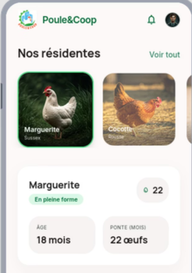

Ce projet a été réalisé dans le cadre du module R6.01 – Initiation à l’entrepreneuriat en troisième année de BUT Informatique à l’IUT Montpellier-Sète. Il s’inscrit dans le challenge Scrum’Innov, un créathon de plusieurs jours durant lequel des équipes pluridisciplinaires conçoivent une solution innovante autour du numérique responsable. L’objectif était de proposer un projet de création d’entreprise en partant d’un besoin concret, tout en intégrant des contraintes économiques, environnementales et sociétales. Le projet s’est déroulé sur une courte période, avec une organisation en sprints et une restitution finale devant un jury.
Le travail a été structuré selon une approche inspirée des méthodes agiles, avec plusieurs phases courtes permettant de faire évoluer progressivement l’idée initiale. Nous avons d’abord identifié un problème réel lié à l’utilisation des espaces urbains, puis construit une proposition de valeur autour d’un service de coopoulailler connecté. En parallèle, une démarche de Design Thinking a été adoptée pour centrer la solution sur les besoins des utilisateurs, en imaginant une application mobile permettant de suivre la production et l’utilisation du service.
Le projet final propose une solution complète combinant un produit physique et un service numérique. Il permet de transformer des espaces inutilisés en lieux de production locale, tout en favorisant le lien social entre les habitants. Une réflexion approfondie a été menée sur le modèle économique, incluant les coûts de production, les sources de financement et la viabilité du projet à moyen terme. Le projet a été présenté sous forme de pitch accompagné de supports visuels détaillant le fonctionnement, les bénéfices et les perspectives d’évolution.

Ce projet m’a permis de développer des compétences en gestion de projet et en travail collaboratif, notamment à travers une organisation en sprints et la répartition des tâches au sein de l’équipe. J’ai également renforcé ma capacité à analyser un besoin, à structurer une solution et à prendre en compte des contraintes variées, qu’elles soient techniques, économiques ou environnementales. Enfin, la préparation du pitch final a permis de travailler la communication et la capacité à présenter un projet de manière claire et synthétique.